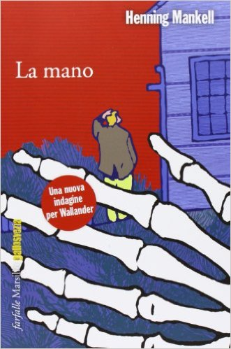
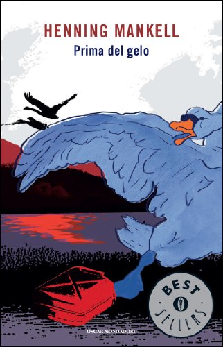

Autore: Henning Mankell
Editore: Marsilio
Pagine: 560
Genere: Thriller
Anno Pubblicazione: 2010
Accade, a volte, che un omicidio, per quanto brutale, per quanto tragico, sia soltanto un incidente, un inconveniente che rischia di rovinare un piano grandioso studiato nei minimi dettagli, un inciampo, un capriccio, uno scherzo maligno del caso.
Accade, a volte, che a vestire i panni semplici e terribili del boia sia la sfortuna, e che uccidere sia solo un affannoso tentativo di rimettere le cose a posto.
Accade, quando in gioco ci sono secoli di storia, quando si combatte perché i diritti calpestati di un intero popolo, cui viene impedito con la forza di vivere liberamente nella propria terra, vengano finalmente riconosciuti, quando i tiranni, timorosi di perdere il potere, inaspriscono ancor di più il loro giogo, che la morte di qualcuno non valga neppure un pensiero, che non venga presa in considerazione, che esistere e cessare di farlo siano la medesima cosa.
Niente altro che facce di una stessa medaglia.
Cardine di ogni romanzo giallo, principio e fine della sua struttura narrativa, il delitto di sangue muta drasticamente di sostanza ne La leonessa bianca di Henning Mankell, diviene, per l’appunto, fatto accidentale, momento di per sé insignificante all’interno di un disegno tanto complesso quanto sconvolgente.
Muovendosi su differenti piani temporali e geografici (il romanzo si apre in Sudafrica al principio del Novecento), lo scrittore svedese incorpora nell’architettura classica della narrazione poliziesca sia le atmosfere torbide del romanzo spionistico sia la rovente attualità dell’analisi politico-sociale e dà vita a un’opera che si legge d’un fiato, ricca di colpi di scena e popolata da personaggi di grande spessore, perfettamente delineati nella psicologia e nel carattere. In questo romanzo corposo e seducente, trascinante nel ritmo e limpido nello stile, Mankell guarda al Sudafrica dei primi anni Novanta (quando il Paese, governato dal presidente de Klerk, si preparava ad abolire definitivamente il regime di apartheid e Nelson Mandela, uscito di prigione dopo 26 anni, guidava le masse verso una rivoluzione pacifica ed epocale) come a uno dei capitoli fondamentali della storia umana.
E lo racconta da par suo, prendendo le mosse dalla presenza boera nel Paese, dalla convinzione di quel popolo di essere destinato da Dio alla sovranità assoluta sui neri, per arrivare fino al diabolico complotto ordito da un’irriducibile élite bianca al fine di mantenere intatto il proprio dominio.
L’omicidio di Nelson Mandela per opera di un killer di colore. Questo è quanto si propongono i boeri coinvolti nel piano eversivo.
Un atto che equivarrebbe a una dichiarazione di guerra, che scatenerebbe la rabbiosa reazione del popolo sudafricano, delle masse confinate nelle baraccopoli, nei ghetti, nelle periferie abbandonate, in autentici gironi infernali come Soweto, tumorale ammasso di baracche di lamiera cresciuto a dismisura ai confini dell’area urbana di Johannesburg, e che consentirebbe a chi è ancora formalmente al potere di reagire con la massima durezza e in tal modo di riconquistare le posizioni perdute.
Esautorando il “traditore” de Klerk e insediando al suo posto un boero degno di questo nome. E Kurt Wallander, commissario di polizia di provincia, ignaro o quasi perfino dell’esistenza del Sudafrica (figurarsi della sua situazione), si ritrova d’improvviso invischiato in questa ragnatela d’odio secolare e di violenza indicibile perché chi ha ordito tutto questo ha pensato che non ci fosse luogo migliore della tranquilla e tutto sommato ancora innocente Svezia per addestrare il killer, spedito lì assieme a un ex ufficiale del Kgb, responsabile della sua preparazione.
Sfortunatamente, però, è proprio in Svezia, o per dir meglio in Scania, nella propaggine meridionale del Paese, che ogni cosa comincia a disfarsi; nella casa isolata in cui il futuro assassino di Mandela e il suo istruttore si stanno preparando, infatti, capita per errore una donna, Louise Akerblom, un’agente immobiliare, moglie e madre felice, finita lì per colpa di una svolta sbagliata.
Aveva un appuntamento, quella donna, con una persona interessata a vendere la sua casa; è bastato che commettesse un errore, un banalissimo errore, per ritrovarsi a tu per tu con il suo assassino.
“Hai visto qualcosa che non avresti mai dovuto vedere, hai visto qualcuno che non è mai stato qui”
sembra dire lo sguardo duro, glaciale dell’uomo che la fissa per un lunghissimo istante prima di ucciderla sparandole un colpo in testa. È la fine per la povera signora Akerblom, mentre per Wallander questo delitto segna l’inizio di un’indagine che metterà a dura la prova le sue certezze di uomo e di poliziotto e lo costringerà a spalancare gli occhi su abissi di dolore e ingiustizia che credeva inimmaginabili.
Magnificamente sospeso tra invenzione e realtà, La leonessa bianca è un romanzo affascinante, un giallo potente che con coraggio guarda oltre se stesso, prende posizione, si assume responsabilità e finisce per fare della finzione, pur nel pieno rispetto del suo status di forma d’arte, un efficace strumento di lotta.
L'AUTORE - Viveva tra la Svezia e il Mozambico, dove a Maputo dirigeva il teatro Avenida. È l’autore della fortunatissima serie del commissario Wallander, pubblicata in molti paesi.
In traduzione italiana si contato, tra gli altri: il giallo Il ritorno del maestro di danza (2010), il romanzo Scarpe italiane (2008), i romanzi di ambientazione africana Comédia infantil (2001) e Il figlio del vento (2002) e il libro testimonianza Io muoio, ma il ricordo vive. Un’altra battaglia contro l’Aids (2005).
Tra i suoi ultimi romanzi pubblicati in Italia per Marsilio: Il cinese (2009), L'uomo inquieto (2010), Ricordi di un angelo sporco (2012), La mano (2013), L'occhio del leopardo (2014). Sempre nel 2014, esce per Marsilio la raccolta GialloSvezia. Racconti inediti dei maestri del giallo svedese, in cui, tra gli altri, appare il suo racconto Un incontro improbabile, scritto con Håkan Nesser. Sempre per Marsilio è prevista l'uscita di Sabbie mobili, un libro che raccoglie la sua profonda visione della vita e della morte, nato nei lunghi mesi della sua malattia che lo ha portato alla morte nel 2015.
Tra i riconoscimenti internazionali al suo lavoro, ricordiamo The Academy of Swedish Crime Writers’ prize per Faceless Killers (1991); Scandinavian Crime Society prize, The Glass key, per Faceless Killers (1991); The Academy of Swedish Crime Writers’ prize per Sidetracked (1995); the British Crime Writers’ Association prize, the Golden Dagger, per Sidetracked (2001).
Dello stesso autore su THRILLERNORD:
 IL LIBRO - Henning Mankell in questo romanzo ci presenta la genesi del suo
personaggio, Kurt Wallander, un poliziotto di provincia. Egli però è
solo, la moglie lo ha lasciato, ha perso i contatti con la figlia e gli
amici di un tempo sono lontani, ed ha un padre a cui badare
IL LIBRO - Henning Mankell in questo romanzo ci presenta la genesi del suo
personaggio, Kurt Wallander, un poliziotto di provincia. Egli però è
solo, la moglie lo ha lasciato, ha perso i contatti con la figlia e gli
amici di un tempo sono lontani, ed ha un padre a cui badare
 IL LIBRO - Protagonista di questo giallo non è il commissario Kurt Wallander, bensì il poliziotto trentasettenne Stefan Lindman, un uomo comune, preso da tormenti esistenziali che riguardano perlopiù il pessimo stato di salute in cui versa...
IL LIBRO - Protagonista di questo giallo non è il commissario Kurt Wallander, bensì il poliziotto trentasettenne Stefan Lindman, un uomo comune, preso da tormenti esistenziali che riguardano perlopiù il pessimo stato di salute in cui versa...
 IL LIBRO - Il protagonista è Kurt Wallander, commissario della polizia di Ystad, che durante una visita a una
casa di campagna che era intenzionato a comprare, trova nel giardino dell’abitazione lo scheletro di
una mano che sbuca dal terreno...
 IL LIBRO - Da diversi giorni Henrik Cantor non risponde al telefono. Quando sua madre Louise giunge finalmente al suo appartamento, dopo un viaggio dalla Grecia segnato da una sottile angoscia, trova il cadavere del ragazzo riverso sul letto...
IL LIBRO - Da diversi giorni Henrik Cantor non risponde al telefono. Quando sua madre Louise giunge finalmente al suo appartamento, dopo un viaggio dalla Grecia segnato da una sottile angoscia, trova il cadavere del ragazzo riverso sul letto...
 IL LIBRO - Svezia. E’ la fine dell’estate del 2001 e Linda Wallander ha appena finito la scuola di specializzazione per diventare un’agente di polizia. Di lì a poco indosserà la divisa per la prima volta.
Negli stessi giorni la sua amica Anna scompare, dopo averle riferito di aver rivisto suo padre, scomparso ormai da più di vent’anni...
 IL LIBRO - Per Hanna Lundmark, cresciuta in un'umile famiglia nel nord della Svezia, il freddo e la neve sono i primi ricordi e con essi la povertà, «più che un ricordo lo spazio dove era rimasta per tutta la sua adolescenza». È la carestia che la costringe a lasciare la sua misera casa ai piedi delle montagne e a imbarcarsi per un mondo sconosciuto...
IL LIBRO - Per Hanna Lundmark, cresciuta in un'umile famiglia nel nord della Svezia, il freddo e la neve sono i primi ricordi e con essi la povertà, «più che un ricordo lo spazio dove era rimasta per tutta la sua adolescenza». È la carestia che la costringe a lasciare la sua misera casa ai piedi delle montagne e a imbarcarsi per un mondo sconosciuto...
 IL LIBRO - l commissario Wallander deve affrontare una nuova dimensione del crimine, un complotto internazionale che opera attraverso la rete informatica. Un romanzo che mette in luce l’inquietante vulnerabilità di una società apparentemente sempre più efficiente, ma proprio per questo sempre più in balia delle forze...
IL LIBRO - l commissario Wallander deve affrontare una nuova dimensione del crimine, un complotto internazionale che opera attraverso la rete informatica. Un romanzo che mette in luce l’inquietante vulnerabilità di una società apparentemente sempre più efficiente, ma proprio per questo sempre più in balia delle forze...
 IL LIBRO - In una fredda notte d'autunno, Fredrik Welin, medico in pensione che vive in una remota isola del Mar Baltico, si sveglia di soprassalto. La sua casa sta bruciando. Prima di fuggire e lasciarsi alle spalle un cumulo di cenere, fa ancora in tempo a infilarsi un paio di stivali di gomma. Calzano entrambi il piede sinistro...
IL LIBRO - In una fredda notte d'autunno, Fredrik Welin, medico in pensione che vive in una remota isola del Mar Baltico, si sveglia di soprassalto. La sua casa sta bruciando. Prima di fuggire e lasciarsi alle spalle un cumulo di cenere, fa ancora in tempo a infilarsi un paio di stivali di gomma. Calzano entrambi il piede sinistro...
Se siete lettori appassionati visitate questo blog
ilconsigliereletterario.com